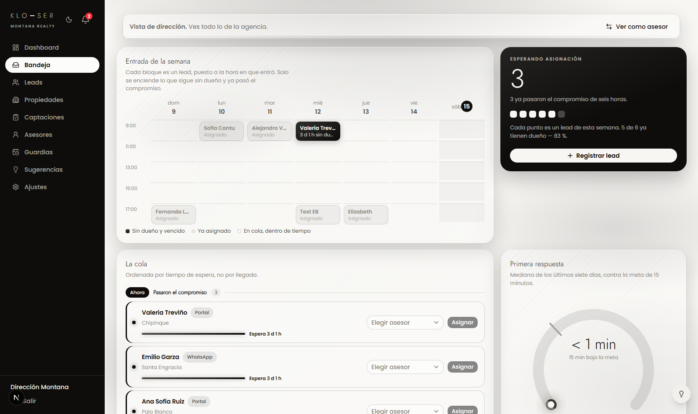
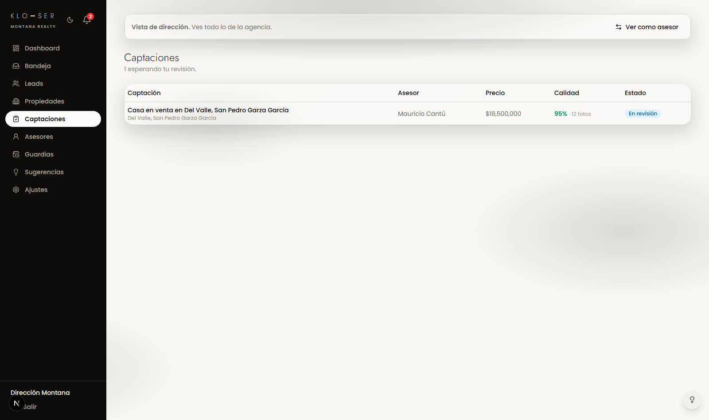
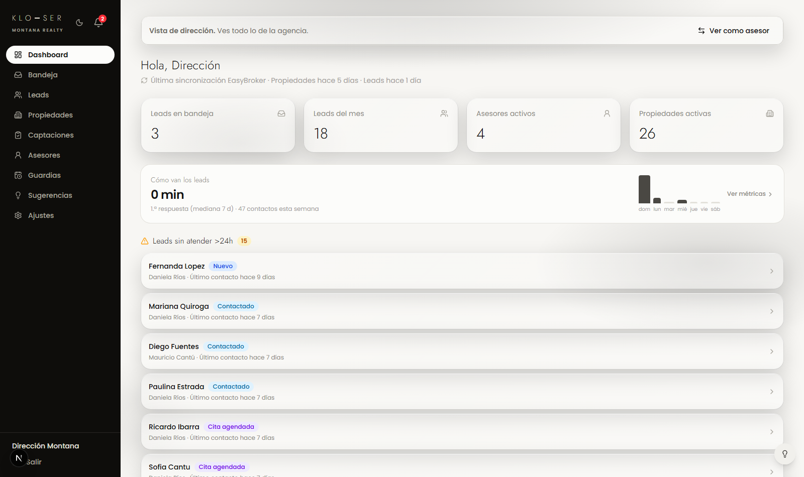
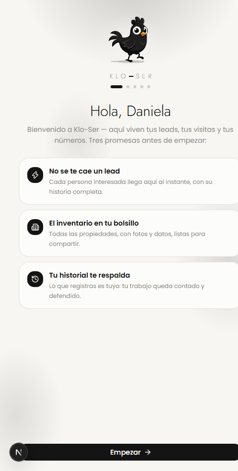

Semana 2:
el sistema cobró vida
Hace siete días, Klo-Ser era un CRM que registraba. Hoy es una máquina que caza leads en menos de un minuto, califica captaciones como los portales, se viste con un sistema de diseño propio y recibe a cada asesor nuevo de la mano. Esto es lo que se construyó — y todo está en producción.

01Los cuatro titulares
Ningún lead se enfría
El tiempo entre que un cliente pregunta por una casa y el sistema lo tiene listo para asignar se desplomó. En bienes raíces, el que contesta primero, gana.
De captación a portales
El asesor sube su captación, un score estilo Inmuebles24 la califica en vivo, y la dirección la publica en EasyBroker y los portales con un solo clic.
PLUMA, diseño propio
Un sistema de diseño monocromo camaleón —blanco galería / negro grafito— con vidrio cristal, aplicado a TODA la plataforma. Identidad de producto, no plantilla.
Onboarding que enamora
Cada asesor nuevo entra por una introducción guiada: su perfil, su contraseña, su tema, sus notificaciones y la app instalada. Adopción por diseño.
02La semana en números
03Historia uno · La máquina de leads
Cada lead llega caliente
Se cerraron las tres fugas por donde se escapaban clientes:
- EasyBroker ahora se revisa cada 60 segundos (antes: cada 15 minutos).
- El sitio oficial de Montana manda cada formulario directo al sistema, al instante — incluso descubrimos y reparamos un formulario que llevaba semanas tirando leads a la basura.
- Los botones de WhatsApp del sitio ahora capturan al cliente antes de abrir el chat.

La bandeja real: cola por urgencia, semana de entrada, primera respuesta
04Historia dos · La fábrica de inventario

Captaciones: el equipo sube, el score califica, la dirección publica
Captaciones con control de calidad
El inventario es el producto de una inmobiliaria. Ahora tiene línea de producción:
- El asesor sube su captación con fotos y ve su score de calidad en vivo — las mismas reglas que premian los portales mexicanos (10+ fotos, título correcto, descripción completa, geolocalización).
- La dirección revisa un dashboard con el porcentaje y el checklist regla por regla.
- Aprobada = un clic y está en EasyBroker, sindicada a Inmuebles24 y los demás portales, firmada con las iniciales del asesor.
05Historia tres · PLUMA, la piel del producto
Un sistema de diseño propio
Los productos que se ven genéricos se venden como genéricos. PLUMA es la identidad visual de Klo-Ser hecha ley:
- Monocromo camaleón: blanco galería para trabajar, negro grafito para el drama — y cada persona elige el suyo, que la sigue a cualquier dispositivo.
- Vidrio cristal: tarjetas translúcidas con profundidad real, en toda la plataforma.
- El número es el héroe: métricas que se leen desde el otro lado de la sala.

Toda la plataforma re-vestida — el mismo código, dos mundos
06Historia cuatro · La puerta de entrada

El primer login: Klo en persona recibe al asesor
El equipo entra solo
El costo oculto de todo software es enseñarlo. Klo-Ser se enseña a sí mismo: en su primer login, cada asesor pasa por una introducción de cinco pasos donde Klo lo recibe por su nombre.
- Hace suya la cuenta: foto de perfil, su nombre, su propia contraseña.
- Elige su tema (y lo ve cambiar en vivo).
- Activa sus notificaciones e instala la app guiado paso a paso — con instrucciones visuales hasta en iPhone.
- Y si un día olvida su contraseña, el ciclo de recuperación completo ya existe.
07Klo, la cara de todo esto
El gallito no es decoración: es el diferenciador de marca en una industria de logos genéricos. Esta semana quedó listo su arsenal completo — vectorizado, en alta resolución y animado — sin tocar un solo trazo del diseño original.
08Lo que sigue — el plan de 90 días
La meta declarada: el segundo brokerage como primer cliente pagando en noviembre. La tecnología ya corre; lo que sigue es operación y expansión.
Hecho esta semana — sitio, portales y WhatsApp del sitio, todo cae al sistema.
Hecho esta semana — la plataforma está lista para recibir al equipo.
Alta de los 4 asesores, guardias capturadas → el teléfono empieza a sonar. Es el paso que enciende todo lo construido.
Semanas de uso real en Montana: mediana de respuesta, % dentro del compromiso, cierres — los números del caso de estudio.
El chatbot entrenado con la operación real de Montana — el moat que nadie puede copiar.
Primer cliente de pago con onboarding de una semana. De proyecto interno a empresa.